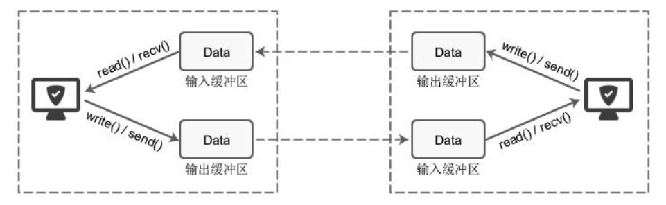
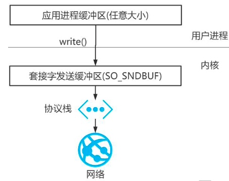

在所有的网络通信和应用程序中，每个 TCP 的 Socket 的内核中都有一个发送缓冲区 (SO_SNDBUF)和一个接收缓冲区(SO_RECVBUF)，可以使用相关套接字选项来更改该缓冲区大 小。

当某个应用进程调用 write 时，内核从该应用进程的缓冲区中复制所有数据到所写套接 字的发送缓冲区。如果该套接字的发送缓冲区容不下该应用进程的所有数据(或是应用进程 的缓冲区大于套接字的发送缓冲区，或是套接字的发送缓冲区中已有其他数据)，假设该套 接字是阻塞的，则该应用进程将被投入睡眠。
内核将不从 write 系统调用返回，直到应用进程缓冲区中的所有数据都复制到套接字发送缓冲区。因此，从写一个 TCP 套接字的 write 调用成功返回仅仅表示我们可以重新使用原来的应用进程缓冲区，并不表明对端的 TCP 或应用进程已接收到数据。

Java 程序自然也要遵守上述的规则。
但在 Java 中存在着堆、垃圾回收等特性，所以在实际的 IO 中，在 JVM 内部的存在着这样一种机制: 在 IO 读写上，如果是使用堆内存，JDK 会先创建一个 DirectBuffer，再去执行真正的写操作。
这是因为，当我们把一个地址通过 JNI 传递给底层的 C 库的时候，有一个基本的要求， 就是这个地址上的内容不能失效。然而，在 GC 管理下的对象是会在 Java 堆中移动的。也就是说，有可能我把一个地址传给底层的 write，但是这段内存却因为 GC 整理内存而失效了。 所以必须要把待发送的数据放到一个 GC 管不着的地方。这就是调用 native 方法之前，数据—定要在堆外内存的原因。
可见，DirectBuffer 并没有节省什么内存拷贝，只是因为 HeapBuffer 必须多做一次拷贝， 使用 DirectBuffer 就会少一次内存拷贝。相比没有使用堆内存的 Java 程序，使用直接内存的 Java 程序当然更快一点。
从垃圾回收的角度而言，直接内存不受 GC(新生代的 Minor GC) 影响，只有当执行老 年代的 Full GC 时候才会顺便回收直接内存，整理内存的压力也比数据放到 HeapBuffer 要小。
堆外内存的优点和缺点
堆外内存相比于堆内内存有几个优势:
- 减少了垃圾回收的工作，因为垃圾回收会暂停其他的工作线程
- 加快了复制的速度。因为堆内在 flush 到远程时，会先复制到直接内存(非堆内存)，然后再发送，而堆外内存相当于省略了这个操作。
相对来说堆外内存的劣势如下：
- 堆外内存难以控制，如果内存泄漏，很难排查
- 堆外内存相对来说，不适合存储很复杂的对象。一般简单的对象或者扁平化的对象比较合适